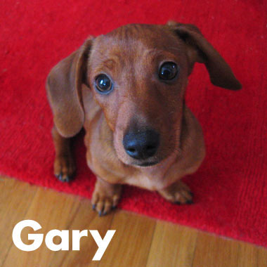

Aaron Draplin
Career
- Nickel Ads in Bend, Oregon - “Layer-Outer, Pagemaker Wizard, Pagination Magician.” (Winter 1995)
- Draplindustries Design Co in North America - Sole Proprietor (December 1995-2004)
- Charles Spencer Anderson Design in Minneapolis, Minnesota - Scanning Technician (Fall 1999)
- Snowboarder Magazine in San Juan Capistrano, California - Art Director (April 2000-April 2002)
- Cinco Design Office in Portland, Oregon - Senior Designer (April 2002-August 2004)
- Draplin Design Co in Portland, Oregon - Sole Proprietor (August 2004-present)
- Wilderness in Portland, Oregon - Partnering with John Phemister and David Nakamoto (February 2008-present)
Achievements
- High School Diploma from Traverse City Senior High in Traverse City, Michigan (June 1991)
- Associates Degree in Visual Communications from Northwestern Michigan Community College in Traverse City, Michigan (June 1993)
- Bachelor’s of Science Degree, Graphic Design from Minneapolis College of Art + Design in Minneapolis, Minnesota (December 2000)
- Art Director of the Year at Snowboarder Magazine, EMAP Publishing, in Los Angeles, California (Spring 2001)
- “Fresh Signals” Guest Editor, Coudal Partners at Coudal Partners in Chicago, Illinois (January 2004)
